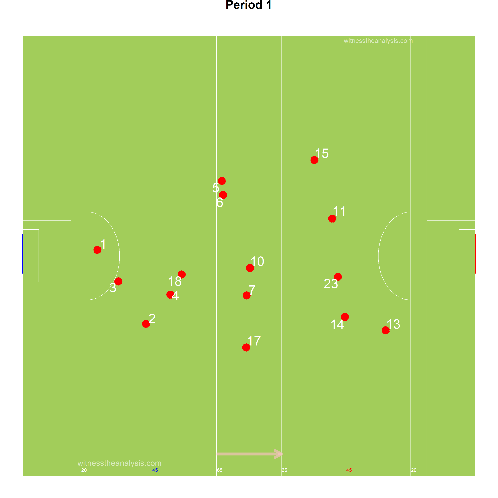
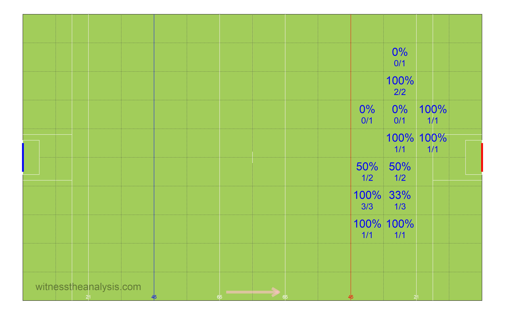
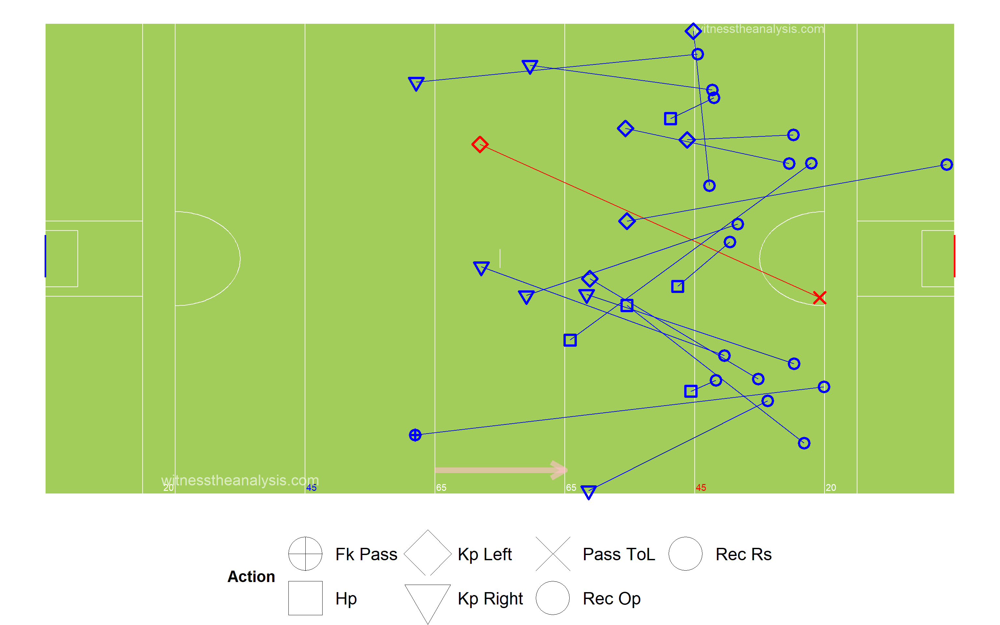
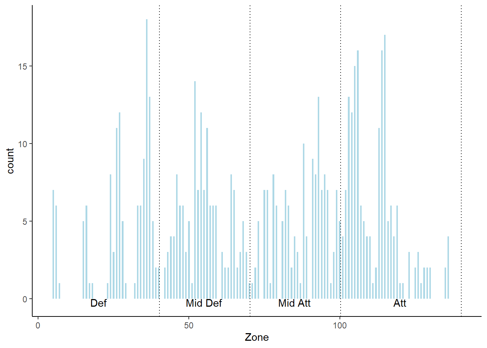

Kerry (1.20) vs Donegal (1.20)
Super 8s Round 2 - 2019
#Summary ##Starting Line Up (Number, Player, Playing time) ###Kerry
###Donegal
##Scores| Donegal | Kerry |
|---|---|
| Murphy 1-7 (0-4 fs, 1-0 pen) | Geaney 1-4 |
| McBrearty 0-5 (0-3 fs) | O Shea 0-4 (0-3 fs) |
| McHugh 0-2 | O Brien, 0-3 |
| Gallen 0-2 | Spillane 0-3 |
| Langan 0-2 | Clifford 0-2 (0-1 f) |
| McGee 0-1 | O Sullivan 0-1 |
| O Donnell 0-1 | Foley 0-1 |
| Murphy 0-1 |
| Team | Score.Eff.. | Shots.PerPoss | Scores.PP | Op.Scores.PP | Fk.Score. | Ko. |
|---|---|---|---|---|---|---|
| Kerry | 65% | 67% | 46% | 37% | 100% | 77% |
| Donegal | 70% | 63% | 46% | 30% | 75% | 84% |
##Scoring Timeline
##Score Differential
#Positioning & Possessions ##Average Position by Action ###Kerry ###Game
###Period 
###Donegal ###Game
###Period 
##Areas of Play by Possession ###Kerry
###Donegal
##Denisty Map (All Actions) ###Kerry
###Donegal
##Path of Possession
| Lines | X | X.1 | X.2 |
|---|---|---|---|
| Action | Colour | Action | Colour |
| Hand Pass | Black | Kickout Lost | Dark Red |
| Run | Blue | Kick Pass Left | Pink |
| Score | Yellow | Kick Pass Right | White |
| Miss shot | Red | Fk/Mk/Sl Pass | Light Blue |
| Kickout | Gold | Pass Loss | Red |
| Dots | |||
| Action | Colour | ||
| Possession Won | Purple | ||
| Ko/Pass Lost | Red | ||
| Fk Won | Blue | ||
| Fk Won (in 45) | Orange | ||
| Kickout Won | Black |
###Kerry
###Donegal
#General ##Kick Outs ###Kerry

###Kickout Efficiency
###Kickout Network - Kerry
###Donegal
###Kickout Efficiency
###Kickout Network - Donegal
##Turn overs/Possession Won
###Kerry
###Donegal
##Frees Won ###Kerry
###Donegal

##Frees Loss ###Kerry
###Donegal
#Attacking
##Attacking Stats| X | Kerry | X.1 | Donegal | X.2 |
|---|---|---|---|---|
| Shot | Score | shot | score | |
| AttTime | 00:12:35 | 00:08:56 | 00:14:12 | 00:10:44 |
| possave | 00:00:25 | 00:00:26 | 00:00:29 | 00:00:29 |
| phaseave | 00:00:19 | 00:00:19 | 00:00:19 | 00:00:20 |
| Origin Type | ||||
| Shot | Score | shot | score | |
| PW | 12 | 7 | 15 | 11 |
| Ko | 17 | 14 | 14 | 10 |
| Pitch Area Origin | ||||
| Shot | Score | shot | score | |
| Def | 24 | 12 | 20 | 16 |
| Def Mid | 2 | 1 | 1 | 0 |
| Att Mid | 2 | 1 | 3 | 2 |
| Att | 3 | 2 | 3 | 3 |
| Poss Duration | ||||
| secs | Shot | Score | shot | score |
| 0-9 | 2 | 1 | 3 | 2 |
| 10-19 | 7 | 5 | 6 | 4 |
| 20-29 | 14 | 9 | 7 | 5 |
| 30-39 | 5 | 3 | 4 | 3 |
| 40-49 | 2 | 2 | 6 | 4 |
| 50-59 | 1 | 1 | 2 | 2 |
| 60-69 | 0 | 0 | 1 | 1 |
| 70+ | 0 | 0 | 0 | 0 |
| Team | Poss | Phase | All.Shots | All.Scores | Shots.Per.Poss | Scores.PP | Shots.Op | Scores.Op | Score.Eff.. | Op.Scores.PP |
|---|---|---|---|---|---|---|---|---|---|---|
| Kerry | 47 | 61 | 31 | 21 | 66% | 45% | 26 | 17 | 65% | 36% |
| Donegal | 46 | 67 | 29 | 21 | 63% | 46% | 20 | 13 | 65% | 28% |
| Team | Poss Time | Ave Poss Shot | Ave Phase Shot | Ave Poss Scr | Ave Phase Scr | Ave Act Poss | Ave Act Sht | Ave Act Scr | ||
| Kerry | 00:23:02 | 00:00:25 | 00:00:19 | 00:00:26 | 00:00:19 | 11.30 | 13.47 | 13.29 | ||
| Donegal | 00:21:36 | 00:00:29 | 00:00:19 | 00:00:29 | 00:00:20 | 13.30 | 14.39 | 14.57 |
| Kerry | Shots | Time..secs. | X | X.1 | X.2 | X.3 | X.4 | X.5 | X.6 |
|---|---|---|---|---|---|---|---|---|---|
| Area | 0-9 | 10-19 | 20-29 | 30-39 | 40-49 | 50-59 | 60-69 | 70+ | Total |
| Def | 1 | 4 | 12 | 5 | 2 | 0 | 0 | 0 | 24 |
| Def Mid | 0 | 2 | 0 | 0 | 0 | 0 | 0 | 0 | 2 |
| Att Mid | 0 | 1 | 0 | 0 | 0 | 1 | 0 | 0 | 2 |
| Att | 1 | 0 | 2 | 0 | 0 | 0 | 0 | 0 | 3 |
| Kerry | Scores | Time (secs) | |||||||
| Area | 0-9 | 10-19 | 20-29 | 30-39 | 40-49 | 50-59 | 60-69 | 70+ | Total |
| Def | 0 | 3 | 8 | 3 | 2 | 0 | 0 | 0 | 16 |
| Def Mid | 0 | 1 | 0 | 0 | 0 | 0 | 0 | 0 | 1 |
| Att Mid | 0 | 1 | 0 | 0 | 0 | 1 | 0 | 0 | 2 |
| Att | 1 | 0 | 1 | 0 | 0 | 0 | 0 | 0 | 2 |
| Donegal | Shots | Time (secs) | |||||||
| Area | 0-9 | 10-19 | 20-29 | 30-39 | 40-49 | 50-59 | 60-69 | 70+ | Total |
| Def | 0 | 3 | 6 | 4 | 5 | 2 | 1 | 0 | 21 |
| Def Mid | 0 | 0 | 0 | 0 | 1 | 0 | 0 | 0 | 1 |
| Att Mid | 0 | 2 | 1 | 0 | 0 | 0 | 0 | 0 | 3 |
| Att | 3 | 1 | 0 | 0 | 0 | 0 | 0 | 0 | 4 |
| Donegal | Scores | Time (secs) | |||||||
| Area | 0-9 | 10-19 | 20-29 | 30-39 | 40-49 | 50-59 | 60-69 | 70+ | Total |
| Def | 0 | 2 | 4 | 3 | 4 | 2 | 1 | 0 | 16 |
| Def Mid | 0 | 0 | 0 | 0 | 0 | 0 | 0 | 0 | 0 |
| Att Mid | 0 | 1 | 1 | 0 | 0 | 0 | 0 | 0 | 2 |
| Att | 2 | 1 | 0 | 0 | 0 | 0 | 0 | 0 | 3 |
##Open Play Shots - Location & Outcome
###Kerry
###Shot Efficiency - Kerry
###Donegal
###Shot Efficiency - Donegal 
##All Shots - Location & Outcome ###Kerry
###Donegal
##All Shots Origin by Possession ###Kerry (Blue = Score)
###Donegal (Blue = Score)
##Open Play Shot Origin by Phase ###Kerry (Blue = Score)
###Donegal (Blue = Score)
##Shot Network ###Kerry
###Donegal
##Score Network ###Kerry
###Donegal
#Passing
##Pass Breakdown| X | Kerry | Donegal |
|---|---|---|
| Total Pass | 194 | 234 |
| Hp | 139 | 186 |
| Kp | 44 | 33 |
| Kp Left | 15 | 7 |
| Kp Right | 29 | 26 |
| Fk Pass | 9 | 12 |
| Mk Kp | 1 | 1 |
| Side Line Pass | 1 | 2 |
| 45 Pass | 0 | 0 |
##All Passes ###Kerry
###Donegal
##Passes into 45 ###Kerry

###Donegal
##Passes Inside Opp 65 ###Kerry
###Donegal

##Pass Network ###Kerry
###In Degree (Number of Players a Player Received a Pass from)
## O Sullivan Murphy Enright O Shea Spillane Geaney O Brien O Connor Clifford Sherwood Foley Crowley Spillane White
## 14 11 9 9 9 9 8 7 6 6 5 5 5 4
## Ryan Morley Lyne Griffin Burns O Se O Sullivan
## 3 3 3 3 3 1 0###Out Degree (Number of Players a Player Made a Pass to)
## O Sullivan Murphy O Shea Enright O Connor Spillane Crowley Spillane Foley Sherwood Morley Clifford O Brien Lyne
## 13 11 10 9 8 8 7 7 6 6 5 5 5 5
## White Geaney Ryan Griffin Burns O Se O Sullivan
## 4 4 3 3 3 1 0###Strength in (Number of Passes Received by a Player)
## O Shea O Sullivan Spillane Murphy Enright Clifford Geaney O Brien Spillane O Connor Foley Crowley Sherwood Ryan
## 19 18 16 15 15 14 13 13 11 8 7 6 6 4
## White Lyne Morley Griffin Burns O Se O Sullivan
## 4 4 3 3 3 1 0###Strength Out (Number of Passes/Shots Made by a Player)
## O Sullivan O Shea Murphy Enright Spillane Spillane Crowley O Connor O Brien Morley Clifford Geaney Foley White
## 20 18 16 15 15 13 10 9 9 8 7 7 6 6
## Sherwood Ryan Lyne Burns Griffin O Se O Sullivan
## 6 5 5 4 3 1 0###Betweenness Centrality (Flow of Passes through a Player)
## O Sullivan Murphy O Brien O Shea Enright Burns Spillane Foley Sherwood O Connor Crowley Spillane Lyne Clifford
## 0.145261319 0.091839995 0.068750323 0.049606753 0.033922486 0.029277165 0.023359454 0.019268422 0.018132934 0.016352535 0.014078357 0.011631038 0.008424650 0.006555619
## Geaney White Morley Griffin Ryan O Se O Sullivan
## 0.006384589 0.005867811 0.004093567 0.003099415 0.001111111 0.000877193 0.000000000###Closeness Centrality (How Well connected and central a Player is within the Teams Network)
## O Sullivan Murphy Enright O Shea Sherwood Crowley Spillane Foley O Connor O Brien Spillane Clifford White Geaney
## 0.48780488 0.44444444 0.44444444 0.43478261 0.41666667 0.40816327 0.40816327 0.40000000 0.40000000 0.40000000 0.39215686 0.39215686 0.38461538 0.38461538
## Lyne Burns Morley Griffin Ryan O Se O Sullivan
## 0.37735849 0.37735849 0.37037037 0.37037037 0.36363636 0.31250000 0.04761905###Entropy (The Unpredictability in who a Player Passes to/Takes shot)
## Clifford Spillane Crowley O Shea O Brien Enright Geaney Spillane O Sullivan Ryan Morley White Burns Foley
## 0.9289137 0.9376373 0.9414324 0.9447221 0.9501648 0.9568273 0.9583832 0.9643267 0.9666860 0.9683925 0.9713257 0.9739760 0.9755038 0.9807239
## Murphy Lyne O Connor Sherwood Griffin O Se
## 0.9807418 0.9825676 0.9859935 1.0000000 1.0000000 1.0000000###Global clustering coefficient (Groups of Players who pass to each other)
## [1] 0.5750577###eigen_centrality (How well connected the well connected are)
## O Shea O Sullivan Enright Spillane Spillane Clifford O Brien Murphy Geaney Crowley O Connor Sherwood Morley White
## 1.00000000 0.85782190 0.84293364 0.82875474 0.74219673 0.68602020 0.68239582 0.65261028 0.60139324 0.42076092 0.40296050 0.30288172 0.29421561 0.28425867
## Foley Lyne Ryan Burns Griffin O Se O Sullivan
## 0.25895359 0.25235795 0.19480921 0.16403599 0.13775448 0.03507149 0.02145423##Donegal
###In Degree (Number of Players a Player Received a Pass from)
## Ward Murphy McHugh McBrearty McMenamin McHugh McFadden McGlynn Thompson Langan
## 13 12 10 10 9 9 9 9 8 8
## O Baoill McFadden Ferry O Donnell Brennan Patton O Gallen Brennan McGee Doherty McCole
## 8 7 7 6 5 5 5 4 3 2
## McLoone
## 1###Out Degree (Number of Players a Player Made a Pass to)
## McHugh Ward Thompson McFadden Murphy Langan McHugh McBrearty Patton McFadden Ferry
## 14 13 12 10 10 10 9 8 7 7
## McMenamin O Donnell McGlynn Brennan O Baoill Brennan Doherty McGee O Gallen McCole
## 7 7 6 5 5 5 4 4 3 2
## McLoone
## 2###Strength in (Number of Passes Received by a Player)
## Murphy Ward McHugh McBrearty Langan McHugh Thompson McGlynn McMenamin McFadden
## 21 20 19 16 14 13 13 12 11 11
## O Donnell O Baoill McFadden Ferry Patton Brennan Brennan O Gallen McGee Doherty McCole
## 11 11 9 7 7 6 5 4 3 2
## McLoone
## 2###Strength Out (Number of Passes/Shots Made by a Player)
## McHugh Ward Murphy McFadden Langan McMenamin Thompson McGlynn McFadden Ferry McHugh
## 23 23 21 15 15 13 12 12 11 11
## McBrearty Patton O Donnell Brennan Brennan O Baoill Doherty McGee O Gallen McLoone
## 10 9 9 6 5 5 4 4 4 3
## McCole
## 2###Betweenness Centrality (Flow of Passes through a Player)
## Ward Thompson McHugh Langan Murphy McHugh Brennan O Donnell McMenamin McBrearty
## 0.1385816495 0.0655361711 0.0632840291 0.0495670716 0.0472148007 0.0396945544 0.0267955020 0.0226192272 0.0205802891 0.0151125190
## O Baoill McFadden McGlynn McFadden Ferry Patton Brennan McGee Doherty McLoone O Gallen
## 0.0132207169 0.0128742386 0.0118045499 0.0082182061 0.0035223956 0.0027893933 0.0024748443 0.0021818229 0.0006578947 0.0006385449
## McCole
## 0.0000000000###Closeness Centrality (How Well connected and central a Player is within the Teams Network)
## Ward Langan McHugh Thompson Murphy McMenamin McHugh McBrearty McFadden Brennan
## 0.8695652 0.8333333 0.8000000 0.8000000 0.8000000 0.7692308 0.7142857 0.7142857 0.6896552 0.6896552
## McFadden Ferry O Donnell McGlynn Patton O Baoill Brennan McGee O Gallen Doherty McCole
## 0.6666667 0.6666667 0.6666667 0.6250000 0.6250000 0.6250000 0.6060606 0.6060606 0.5714286 0.5128205
## McLoone
## 0.5000000###Entropy (The Unpredictability in who a Player Passes to/Takes shot)
## Murphy McBrearty McGlynn McHugh Langan McHugh O Donnell McLoone Patton McMenamin
## 0.9094602 0.9218647 0.9350421 0.9383828 0.9407432 0.9520976 0.9577356 0.9602297 0.9631397 0.9638471
## Ward McFadden Ferry Thompson Brennan O Baoill McFadden O Gallen Brennan Doherty McGee
## 0.9646047 0.9676491 0.9749493 0.9788379 0.9796133 0.9797668 0.9825676 0.9881091 1.0000000 1.0000000
## McCole
## 1.0000000###Global clustering coefficient (Groups of Players who pass to each other)
## [1] 0.6342282###eigen_centrality (How well connected the well connected are)
## Murphy McHugh Ward Langan McBrearty McFadden McHugh McMenamin McGlynn Thompson
## 1.00000000 0.96460980 0.81039465 0.64094226 0.63604743 0.63427079 0.59530395 0.56104422 0.55641054 0.50301807
## McFadden Ferry Patton O Baoill O Donnell Brennan O Gallen Brennan McGee Doherty McLoone
## 0.48255829 0.44792909 0.42010519 0.36855660 0.27791169 0.22414691 0.20000360 0.19580724 0.17070458 0.10556606
## McCole
## 0.08360754#Player Stats ##Player On Ball Possession (Number, Player, Total) ###Kerry
###Donegal
##Posessions Per Playing Time
##Player % involvement and shot efficiency| Team | ply | opshots | Totteamshot | opscr | Totteamscr | convrate |
|---|---|---|---|---|---|---|
| Kerry | Ryan | 0 | 0% | 0 | 0% |
|
| Kerry | Foley | 1 | 4% | 1 | 6% | 100% |
| Kerry | Morley | 0 | 0% | 0 | 0% |
|
| Kerry | O Sullivan | 1 | 4% | 1 | 6% | 100% |
| Kerry | Murphy | 2 | 8% | 1 | 6% | 50% |
| Kerry | Crowley | 0 | 0% | 0 | 0% |
|
| Kerry | White | 1 | 4% | 0 | 0% | 0% |
| Kerry | Enright | 1 | 4% | 0 | 0% | 0% |
| Kerry | O Connor | 0 | 0% | 0 | 0% |
|
| Kerry | Spillane | 0 | 0% | 0 | 0% |
|
| Kerry | O Shea | 2 | 8% | 1 | 6% | 50% |
| Kerry | Spillane | 3 | 12% | 3 | 18% | 100% |
| Kerry | Clifford | 6 | 23% | 2 | 12% | 33% |
| Kerry | Geaney | 6 | 23% | 5 | 29% | 83% |
| Kerry | O Brien | 3 | 12% | 3 | 18% | 100% |
| Kerry | Lyne | 0 | 0% | 0 | 0% |
|
| Kerry | Sherwood | 0 | 0% | 0 | 0% |
|
| Kerry | Griffin | 0 | 0% | 0 | 0% |
|
| Kerry | O Sullivan | 0 | 0% | 0 | 0% |
|
| Kerry | Burns | 0 | 0% | 0 | 0% |
|
| Kerry | O Se | 0 | 0% | 0 | 0% |
|
| Team | ply | opshots | Totteamshot | opscr | Totteamscr | convrate |
|---|---|---|---|---|---|---|
| Donegal | Patton | 0 | 0% | 0 | 0% |
|
| Donegal | McFadden Ferry | 0 | 0% | 0 | 0% |
|
| Donegal | Doherty | 0 | 0% | 0 | 0% |
|
| Donegal | McMenamin | 0 | 0% | 0 | 0% |
|
| Donegal | McHugh | 3 | 15% | 2 | 18% | 67% |
| Donegal | Ward | 0 | 0% | 0 | 0% |
|
| Donegal | McHugh | 0 | 0% | 0 | 0% |
|
| Donegal | McFadden | 1 | 5% | 0 | 0% | 0% |
| Donegal | McGee | 1 | 5% | 1 | 9% | 100% |
| Donegal | Thompson | 0 | 0% | 0 | 0% |
|
| Donegal | O Donnell | 1 | 5% | 1 | 9% | 100% |
| Donegal | Brennan | 1 | 5% | 0 | 0% | 0% |
| Donegal | McBrearty | 5 | 25% | 2 | 18% | 40% |
| Donegal | Murphy | 3 | 15% | 4 | 36% | 133% |
| Donegal | Langan | 1 | 5% | 1 | 9% | 100% |
| Donegal | O Baoill | 1 | 5% | 1 | 9% | 100% |
| Donegal | O Gallen | 2 | 10% | 2 | 18% | 100% |
| Donegal | McGlynn | 0 | 0% | 0 | 0% |
|
| Donegal | Brennan | 1 | 5% | 0 | 0% | 0% |
| Donegal | McCole | 0 | 0% | 0 | 0% |
|
| Donegal | McLoone | 0 | 0 | 0 | 0 |
|
##Open Play Shots vs Play Time
##Open Play Scores vs Play Time
##Open Play Shots vs Open Play Score
##Player Possession Involvement ###Kerry
###Donegal
##Player Shot Involvement ###Kerry
###Donegal
##Player Score Involvement ###Kerry
###Donegal
##Actions and Zones ##By Period ###Kerry
###Donegal 
##Zones Frequency ###Kerry
###Donegal 